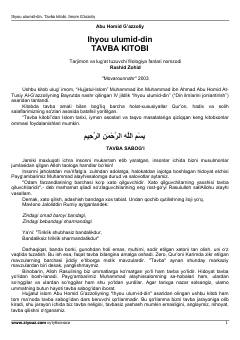

IUImom G'azzoliyning "Ihyou ulumid-din" asaridan tavba va ma'naviy poklanish haqida risola.
Ushbu kitob buyuk imom Abu Homid G'azzoliyning mashhur "Ihyou ulumid-din" asaridan tanlab olingan "Tavba kitobi" bo'lib, unda tavba amali bilan bog'liq barcha holat va xususiyatlar Qur'on, hadis hamda salaflar so'zlari asosida batafsil yoritilgan. Asar insonni ma'naviy poklanish, gunohlardan qutulish va to'g'ri yo'ldan borishga chorlaydi.